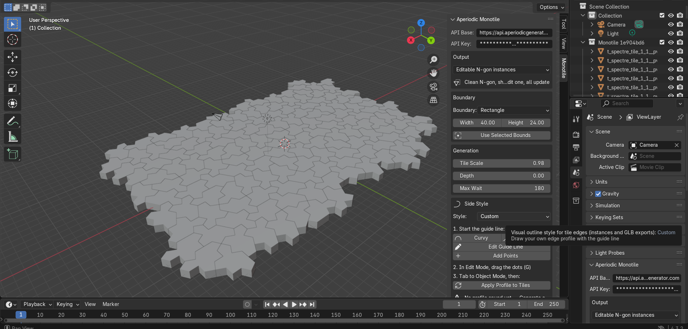

Blender · API
Create surfaces that never repeat.
Stop obvious CG tiling. Generate aperiodic monotile patches in Blender — one shape, no repeating wallpaper unit, excellent for floors, facades, and panels where square grids give themselves away on camera.
Demo
Watch the add-on in Blender.
Patch generation, editable N-gon instances, edge styles, collections, and materials in one walkthrough.
- Surfaces without obvious repetition Ordered variation for floors, facades, panels, sculpture, and procedural environments without a wallpaper repeat unit giving the game away on camera.
- Editable N-gon instances Import one clean Tile(1,1) mesh and distribute linked instances across the patch. Edit one tile, they all update.
- Custom edge styles Flat, curvy, wavy, jagged, blocky, or draw your own edge profile with the in-viewport guide line and stamp it onto every tile edge.
- Organize by tile type One click sorts instances into label collections so you can assign different materials, bevels, or modifiers per tile family.
- Bevel and weighted normals Add bevel modifiers and weighted normals across the patch in one step for clean shading on architectural surfaces.
- Flexible boundaries Fill rectangles, circles, triangles, and more. Match selected object bounds, tune tile scale and depth, then generate inside Blender.
In Blender
Monotile panel in the 3D View sidebar and Scene properties.
Paste your API key, pick a boundary and tile scale, choose instance or GLB output, set side style and depth, then generate. The panel also lives under Scene properties if the N-sidebar tab is hard to find.

Install
Install the add-on, paste your API key, generate GLB geometry.
In Blender 4.2+, open Edit > Preferences > Add-ons > Install..., choose the downloaded zip, enable Untiling, then open the Monotile tab in the 3D View sidebar (or Scene properties).
1. Download the Blender add-on ZIP
2. Install and enable it in Blender Preferences
3. Paste your API key in the Monotile panel
4. Choose boundary, scale, side style, and depth
5. Generate editable N-gon instances or GLBWorkflow tips
From first patch to shaded surface.
- Start with instances N-gon instances are the fastest path for materials, bevels, and collection organization. Switch to GLB when you need a single merged mesh for export.
- Shape edges in the viewport Set Side Style to Custom, edit the guide line, then apply the profile to every tile. Curvy and wavy presets are there when you want a quick stylized look.
- Materials per label After import, use Organize into Label Collections, then assign materials per collection or run randomize materials for quick look-dev passes.
Access
Blender add-on download. Hosted API for generation.
The add-on ZIP is available from this site. Patch generation runs through the hosted API with JPG and PNG preview exports on the legacy generator page. Paid Solo and Pro tiers unlock production GLB, STL, SVG, CSV, and JSON exports for heavier scenes.